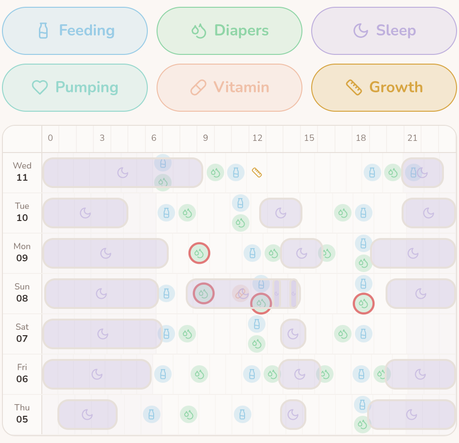

BABYBABY GUIDES / SLEEP & PERSPECTIVE
When naps change: observe a week without forcing a schedule.
A shorter nap, a later start, or a day that looks different again. A few small notes can help you describe what is happening without turning every sleep into a target.
The nap that fitted yesterday may be different today. The NHS describes sleep patterns as individual and changing as babies grow. Another family's timetable is not a forecast for yours.
If you want a clearer picture, try a small observation exercise: choose one question, make a few notes, and look back across several days. A week is a convenient window for organizing those notes, not a clinical test or a waiting period before seeking help.
Start with a question you can describe.
“How do I fix naps?” is a lot to ask of a tired afternoon. Narrow it to something you can actually observe:
- Has the afternoon sleep been starting later across several days?
- Are the short naps happening repeatedly, or am I remembering one especially difficult day?
- What does the next caregiver need to know about the sleep already recorded?
Choose one. You can keep caring for the baby in front of you while collecting enough detail to explain that question. The record does not need to answer everything.
Keep the record small enough to be useful.
- Record sleep you noticed. Add a start and an end time when practical. If you are estimating, say so. A time you hoped the nap would begin belongs in a plan, not in the record of what happened.
- Include the surrounding day. If your question concerns the overall pattern, daytime and nighttime entries give more context than one isolated nap. Check entries that cross midnight before comparing days.
- Add one relevant detail. A different caregiver, an outing, or a baby who seemed unwell may be worth mentioning. Keep the note factual rather than assigning a cause.
- Leave honest gaps. If you missed an entry, mark it as unknown. Do not fill it with a guessed sleep just to complete the chart.
Follow any feeding or waking plan your care team has given you. Do not delay a feed or keep a tired baby awake to make a log resemble a schedule. If recording becomes another burden, simplify it or stop.
Look across a day, then down the week.
In BabyBaby's timeline, recorded sleep stretches can be viewed alongside other care entries. A weekly view puts days next to each other so you can look for repeated timings without relying only on your memory of last night.


Read across one row: it shows the entries for one day. Look down the rows: compare roughly the same part of different days. In this sample, the afternoon sleep blocks begin at different times and have different lengths. That is something you can describe; the screenshot cannot explain why.
You can make the same comparison on paper. Draw one line per day, write the times, and circle the part relevant to your question. The useful part is seeing your own observations together.
Finish with one observation and one next step.
Try a sentence with this structure: “Across the days we recorded, I noticed ____. The part I am unsure about is ____.” Leave room for uncertainty if the entries are incomplete.
Your next step might be giving the next caregiver a clearer handover, keeping one familiar wind-down activity, or asking your health visitor or pediatrician about a change. The NHS suggests that a simple, soothing bedtime routine may help babies settle. A quiet song or story can be part of a familiar sequence without requiring sleep at exactly the same minute.
The chart cannot tell you whether to drop a nap, change a feed, or diagnose a sleep problem. If the question remains unresolved, bring the observation to a professional rather than changing several things to chase a better-looking week.
Keep the sleep space safe through every change.
The CDC recommends placing babies on their backs for every sleep, including naps, on a firm, flat surface in a safety-approved crib or bassinet. Keep pillows, loose blankets, soft toys, and other soft bedding out of the sleep area. Keep the baby's sleep space in your room, ideally for at least the first six months.
A short nap or an unsettled week is not a reason to change those basics. A log records sleep; it does not monitor breathing or make an unsafe sleep setting safe.
You can ask for support before the week is complete.
The NHS recommends talking with a health visitor when sleep is difficult or you need help with a routine. Tell them how the changes are affecting you as well as what you have noticed about your baby. You do not need a finished chart to have that conversation.
If your baby seems unwell, has feeding changes that worry you, or is unusually sleepy, seek medical advice promptly. NHS guidance calls for immediate medical help for difficulty breathing or a baby who is difficult to wake or cannot be woken. Use your local emergency service for those signs; do not wait to collect more entries.
The aim of observing a week is a clearer question and a little less remembering everything yourself. Your baby does not have to produce a tidy pattern for the exercise to be worthwhile.
Sources and further reading.
KEEP EXPLORING
Make the next handover easier.
Pass on what happened, what changed, and the question you are keeping an eye on.
Read the handover guide